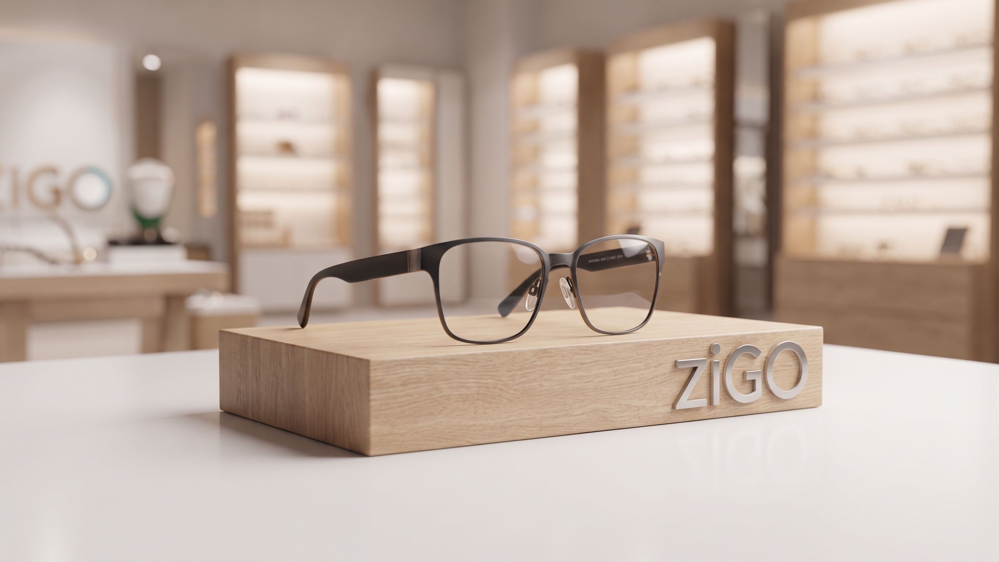
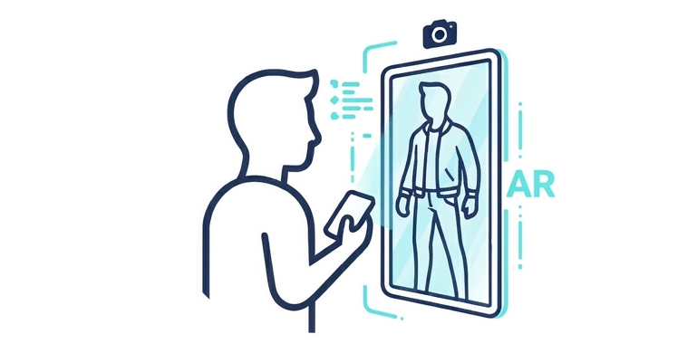

Valoración Integral de Salud Visual
La Dra. Escarlet Alcocer realiza una entrevista clínica detallada sobre tus hábitos visuales, uso de pantallas y antecedentes para personalizar tu estudio.
Así acompaña la Dra. Escarlet Alcocer a cada paciente para garantizar una visión nítida y cómoda
La Dra. Escarlet Alcocer realiza una entrevista clínica detallada sobre tus hábitos visuales, uso de pantallas y antecedentes para personalizar tu estudio.
Evaluación optométrica completa de agudeza visual, salud ocular y graduación exacta sin prisas, explicándote cada resultado con claridad.
Te ayudamos a elegir el armazón que mejor armoniza con tus facciones y realizamos la calibración óptica exacta para tu comodidad.


